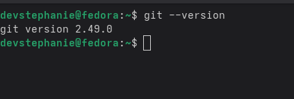

There are alot of other version control systems.They Include
However in this blog we will be focusing on git.Whether you're just starting out or looking to refine your skills, understanding Git is essential for efficient and collaborative coding.stay with me on this journey
we are going to go through the basic commands used in git .
To confirm whether you have git installed you run the command git --version
if you have git installed you will see the version of git you are using
If you go not see a version of git , you can head to git to download for your specific os
After installing git, you need to configure it with your name and email address. This information will be associated with your commits.
To set your name, use the following command: git config --global user.name
To set your email address, use the following command: git config --global user.email

These commands will set your global Git configuration, which means they will apply to all repositories on your system. If you want to set them for a specific repository, navigate to that repository and run the same commands without the --global flag.
A Git repository is a virtual storage of your project. It allows you to save versions of your code, which you can access when needed.
To create a new Git repository, navigate to the directory where you want to create it and run the following command: git init

Once you have a repository, you can start tracking files. The staging area is where you prepare files before committing them to the repository.
Wrhen you make changes to files in your repository, Git doesn't automatically track those changes. Instead, you need to add the files to the staging area before committing them.
The staging area is like a buffer between your working directory and the repository. It allows you to review changes before finalizing them.
To see the status of your files and the staging area, you can use the command git status
There is a difference between tracked and untracked files
To start tracking files in your repository, you need to add them to the staging area. You can do this using the git add . command.
.png)
The . indicates that you want to add all changes in the current directory. You can also specify individual files if you only want to add specific changes.
After adding files to the staging area, you can check the status again using git status. You should see that the files are now staged and ready to be committed.
Once you have staged your changes, you can commit them to the repository. A commit is like a snapshot of your project at a specific point in time.
To commit your changes, use the following command: git commit -m "your commit message"
The -m flag allows you to add a commit message directly in the command line. This message should describe the changes you made in that commit.
A good commit should answer the question what this change will do
.png)
Branches are a powerful feature of Git that allows you to work on different versions of your project simultaneously. By default, Git creates a branch called master (or main) when you initialize a new repository.
To create a new branch, use the following command: git branch branch_name
To see a list of all branches in your repository, use the command: git branch
.png)
To switch to a different branch, use the command: git switch branch_name
.png)
To create and switch to a new branch in one command, you can use: git checkout -b branch_name
To merge two branches , you run git merge . This will merge the contents of different branches
To delete a branch, use the command: git branch -d branch_name
.png)
You have completed your basic overview for getting started with git